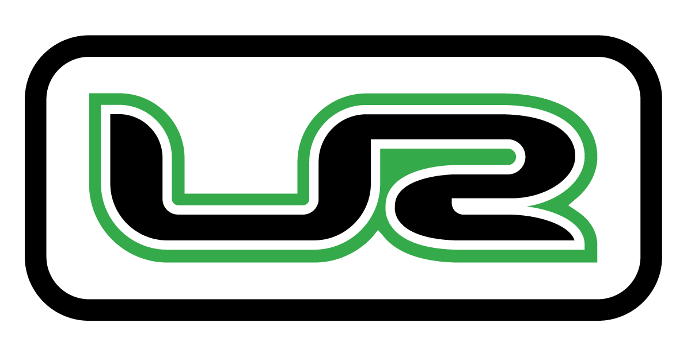

<mat-sidenav-container class="dashboard-sidenav-container">
  <mat-sidenav #sidenav class="app-sidenav" mode="side" >
    <div class="logo-container">
      
    </div>
    <mat-nav-list>
      <a mat-list-item routerLink="/dashboard/inicio" routerLinkActive="active"><mat-icon>dashboard</mat-icon><span class="link-text">Dashboard</span></a>
      <a mat-list-item routerLink="/usuarios" routerLinkActive="active"><mat-icon>people</mat-icon><span class="link-text">Usuarios</span></a>
      <a mat-list-item routerLink="/config" routerLinkActive="active"><mat-icon>settings</mat-icon><span class="link-text">Configuración</span></a>
      <a mat-list-item routerLink="/captura/inicio" routerLinkActive="active"><mat-icon>edit</mat-icon><span class="link-text">Captura</span></a>
    </mat-nav-list>
  </mat-sidenav>

  <mat-sidenav-content>
    <mat-toolbar class="top-header" color="primary">

      <button class="toolbar-hamburger" mat-icon-button (click)="sidenav.toggle()" aria-label="Toggle sidenav"><mat-icon>menu</mat-icon></button>
      <span class="toolbar-title">Panel de Control</span>
      <span class="spacer"></span>
      <div class="user-info">
        <span>Hola, Usuario</span>
        <button mat-button class="logout-button">Salir</button>
      </div>
    </mat-toolbar>

    <main class="content-area">
      <router-outlet></router-outlet>
    </main>
  </mat-sidenav-content>
</mat-sidenav-container>
